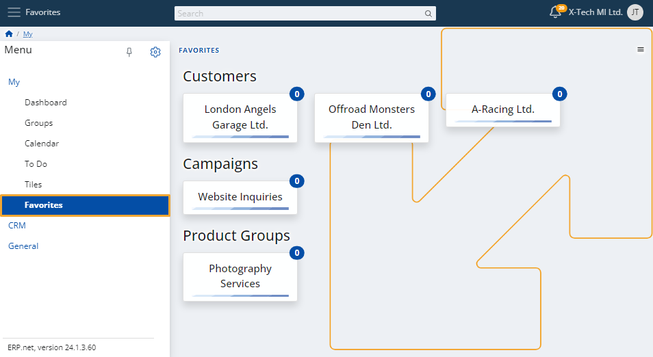

Favorites
You can build your own list of favorites by adding different items of interest.
This includes the compaines, produts or any other entities that you follow.
Once they’re marked as favorite, you will receive notifications for relevant events that happen to them.

If you mark a specific document as a favorite, it automatically includes all of its related documents.
This way, you can stay informed about important actions others may take on the documents.
Add a favorite
To add a new item to your favorites, simply click on its star button at the top-right corner.
This could be any customer, document, campaign, lead, and much more.

Edit
To limit the number of favorite items you have, click the button at the top-right corner of the page and select Edit.

Click on a red cross at the top-right corner of a favorite to remove it.
You'll be asked to confirm the action.

Note
The screenshots taken for this article are from v24 of the platform.